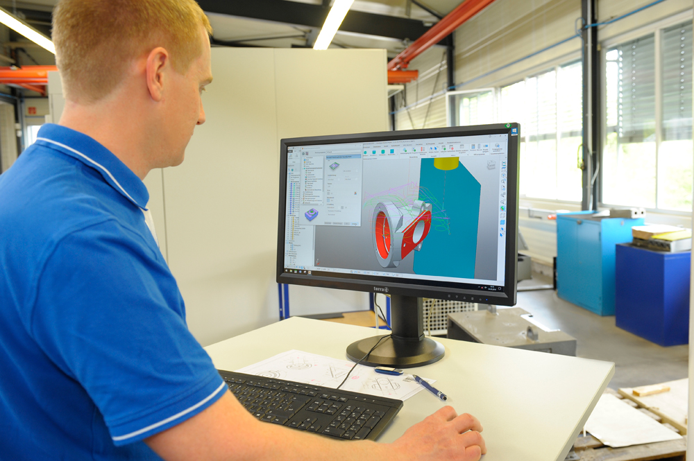

Zerspanungsmechaniker:in (Fräsen)
Programmierung, Rüsten und Bedienung unserer 5-Achs-Fräsmaschine.
Jetzt bewerben →Präzision braucht Menschen, die sie leben. Werde Teil eines modernen Fräsbetriebs mit 5-Achs-Technik, teilautomatisierter Fertigung und echtem Handwerksstolz.
Bei uns arbeitest du an einer 5-Achs-Fräsmaschine und mit automatisierten Fertigungsprozessen. Kurze Wege, ein eingespieltes Team und anspruchsvolle Teile sorgen für abwechslungsreiche Aufgaben.

Programmierung, Rüsten und Bedienung unserer 5-Achs-Fräsmaschine.
Jetzt bewerben →Kaufmann/Kauffrau für Auftragsabwicklung, Angebote und allgemeine Verwaltung – wahlweise in Teilzeit oder Vollzeit.
Jetzt bewerben →Keine passende Stelle dabei? Wir freuen uns über deine Initiativbewerbung.